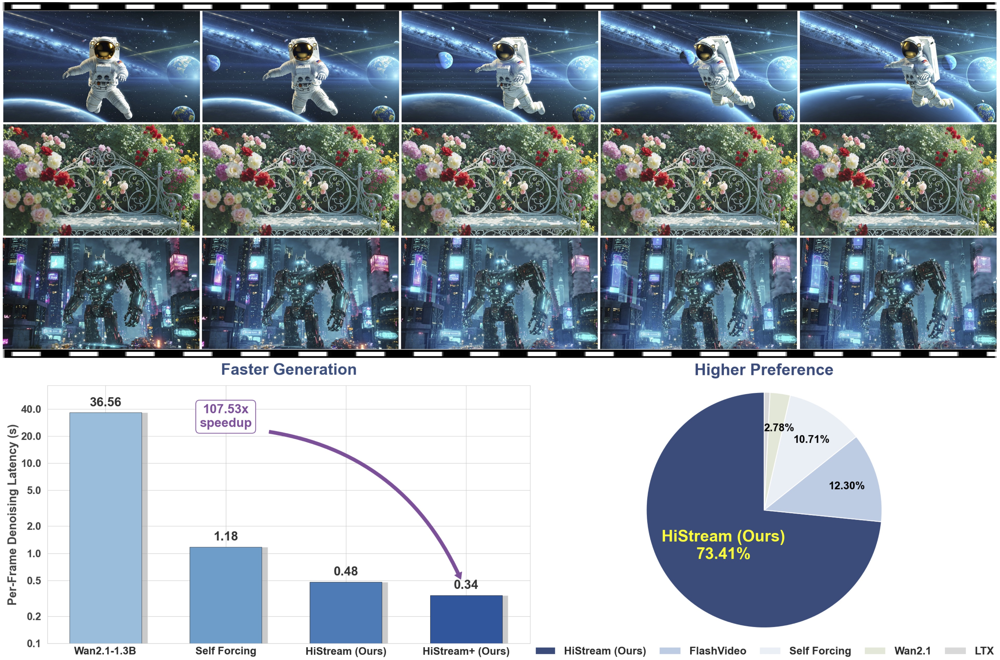

HiStream: Efficient High-Resolution Video Generation
via Redundancy Eliminated Streaming
[arXiv] [Code (under legal review)]

[arXiv] [Code (under legal review)]
High-resolution video generation, while crucial for digital media and film, is computationally bottlenecked by the quadratic complexity of diffusion models, making practical inference infeasible. To address this, we introduce HiStream, an efficient autoregressive framework that systematically reduces redundancy across three axes: i) Spatial Compression: denoising at low resolution before refining at high resolution with cached features; ii) Temporal Compression: a chunk-by-chunk strategy with a fixed-size anchor cache, ensuring stable inference speed; and iii) Timestep Compression: applying fewer denoising steps to subsequent, cache-conditioned chunks. On 1080p benchmarks, our primary HiStream model (i+ii) achieves state-of-the-art visual quality while demonstrating up to 76.2× faster denoising compared to the Wan2.1 baseline and negligible quality loss. Our faster variant, HiStream+, applies all three optimizations (i+ii+iii), achieving a 107.5× acceleration over the baseline, offering a compelling trade-off between speed and quality, thereby making high-resolution video generation both practical and scalable.
Visualization of temporal attention. (Right) Attention during autoregressive generation naturally focuses on the initial frame and the two most recent neighboring frames. (Left) This visualization demonstrates that dropping intermediate, less important frames has a negligible impact, even without retraining. Conversely, dropping the initial frame causes catastrophic quality degradation.
Results visualization of different timesteps. (Left) A notable quality gap exists at Step 1 between frame 9 (chunk 1) and frame 17 (chunk 2). The fully denoised cache from chunk 1 provides high-value context, enabling chunk 2 to achieve a near-final quality (comparable to Step 3) in just one step. (Right) Blur Trial: We also test robustness by blurring the outputs of Steps 1 and 2 (via down/upsampling) in the 4-step process. The final result remains nearly indistinguishable from the Baseline Setting.
Pipeline details. Illustration of the synergy among our three core efficiency mechanisms.

The Anchor-Guided Sliding Window strategy ensures robust temporal scalability by generating the video in fixed-size chunks. Each generation step maintains a constant attention context by combining tokens from the persistent content anchor (the first frame, dark green) and recent historical context (local frames, dark blue), thereby avoiding the growth of the KV cache over time.

The Dual-Resolution Caching accelerates synthesis by adopting a two-stage process: initial low-resolution denoising is followed by high-resolution refinement. Crucially, the final high-resolution output updates KVhigh and is subsequently downsampled to update KVlow, ensuring spatial consistency for subsequent chunks. With Asymmetric Denoising, subsequent chunks use half as many denoising steps as the first chunk.
The videos generated by HiStream exhibit the highest visual fidelity and the cleanest texture, free from spurious patterns or visible artifacts.
We perform controlled comparisons of HiStream with alternative variants.
We perform controlled comparisons of HiStream with alternative variants in different timestep strategies.
Our native high-resolution synthesis captures fine textures with greater accuracy than two-stage super-resolution pipelines, which often miss or hallucinate details.
If you find this paper useful in your research, please consider citing:
@article{qiu2025histream,
title={HiStream: Efficient High-Resolution Video Generation via Redundancy-Eliminated Streaming},
author={Haonan Qiu, Shikun Liu, Zijian Zhou, Zhaochong An, Weiming Ren, Zhiheng Liu, Jonas Schult, Sen He, Shoufa Chen, Yuren Cong, Tao Xiang, Ziwei Liu and Juan-Manuel Perez-Rua},
journal={arXiv preprint arXiv:2512.21338},
year={2025}
}